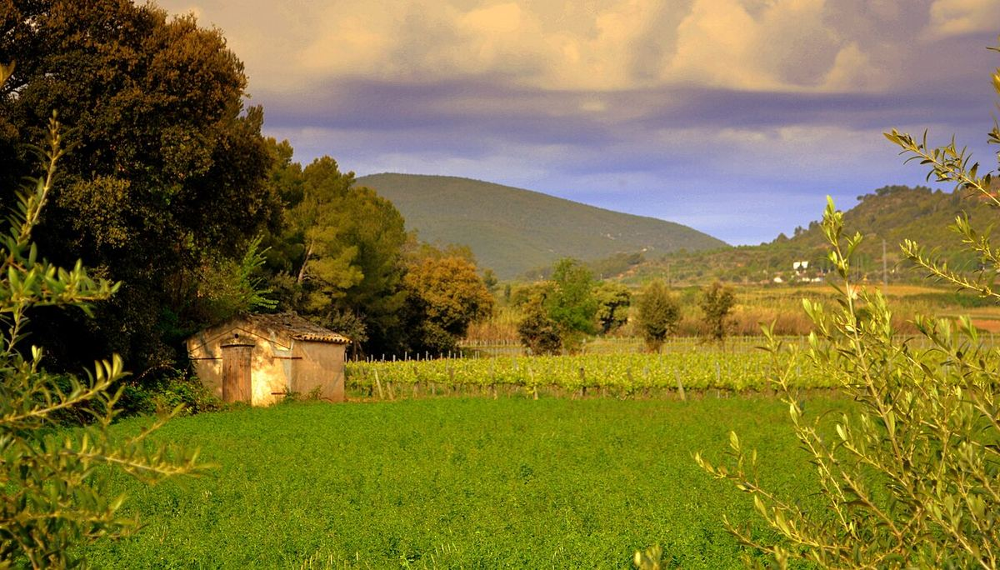

BIANCO
Il Penedès è una denominazione di origine della Catalogna, tra Barcellona e Tarragona, nota per i bianchi di Xarel·lo, Macabeo e Parellada e per un'ampia gamma di rossi, rosati e spumanti. Il suo territorio coincide in gran parte con il cuore della produzione del Cava.

La viticoltura nel Penedès risale all'antichità: nella zona sono stati rinvenuti resti di epoca iberica e romana legati al vino, e nel Medioevo monasteri e nobiltà possedevano estesi vigneti. Nell'Ottocento la regione conobbe una grande espansione viticola, favorita dalla domanda francese durante la crisi della fillossera, finché il parassita raggiunse anche la Catalogna. Il successivo reimpianto si orientò in gran parte verso i vitigni bianchi che sarebbero divenuti la base degli spumanti di Sant Sadurní d'Anoia. Nella seconda metà del Novecento alcune cantine pioniere introdussero vitigni francesi e tecniche moderne, come la fermentazione in vasche d'acciaio inox a temperatura controllata, che ebbero grande influenza sul vino spagnolo. Vilafranca del Penedès, capoluogo della zona, ospita un importante museo dedicato alla cultura del vino.
La denominazione si estende nelle province di Barcellona e Tarragona, tra la costa mediterranea e la catena prelitorale. Tradizionalmente si distinguono tre zone: il Penedès Marítim o Baix Penedès, vicino al mare, più caldo; il Penedès Central, la zona intermedia e più estesa; e l'Alt Penedès o Penedès Superiore, più elevato e fresco, a ridosso delle montagne. Il clima è mediterraneo, con inverni miti ed estati calde, più temperato sulla costa e più fresco e con maggiore escursione termica in altura.
Predominano suoli calcarei, di tessitura franca o argillosa, con buona capacità di ritenzione idrica, e zone con maggiore presenza di sabbie e ghiaie.
Il trio bianco tradizionale è formato da Xarel·lo, considerato il vitigno simbolo della zona, Macabeo e Parellada, quest'ultimo più presente nelle zone alte. Si coltivano inoltre Chardonnay, Sauvignon Blanc, Riesling, Garnacha Blanca, Moscato e Malvasía, con cui a Sitges si produce un vino dolce tradizionale. Tra i rossi figurano Tempranillo (Ull de Llebre), Garnacha, Carignano, Monastrell, Cabernet Sauvignon, Merlot, Pinot Nero, Syrah e l'autoctono Sumoll. Si producono bianchi giovani e affinati, rosati, rossi e spumanti metodo classico con la menzione Clàssic Penedès.
Buona parte dei vigneti e delle cantine del Penedès si trova anche all'interno della zona di produzione del Cava, il cui centro è Sant Sadurní d'Anoia. Per questo molte cantine producono sia vini fermi con la DO Penedès sia spumanti con la DO Cava. Negli ultimi anni la denominazione ha dedicato un'attenzione crescente alla viticoltura biologica e allo Xarel·lo come vitigno in grado di dare bianchi fermi adatti all'invecchiamento.